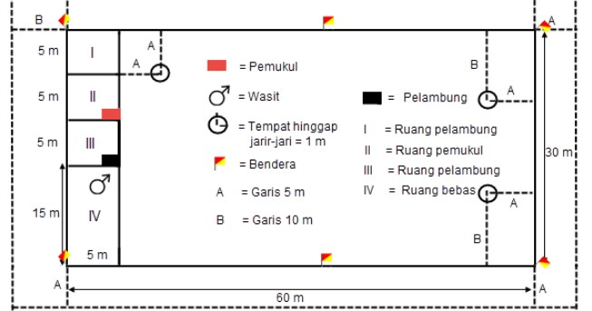

<- Kembali
Permainan Lapangan
2 Materi
Pengertian
Permainan bola kasti adalah suatu permainan yang dimainkan oleh dua regu yang masing-masing regu terdiri dari 12 orang. Kasti adalah permainan yang berasal dari Belanda Pengertian kasti sebenarnya sudah cukup lama kita kenal, permainan tersebut dimainkan oleh anak-anak (Deni Kurniadi, Suro Prapanca, BSE, Penjasorkes Kelas IV, 2000: 3).
Sarana, Peralatan, dan Ketentuan
a. Kayu Pemukul
Panjang: 50 cm atau 60 cm; penampangnya bergaris tengah 5 cm dan 341⁄2 cm (bulat telur).
b. Lapangan
Lapangan permainan kasti berbentuk segi empat.
c. Bola
Dari karet, berat 70 atau 80 gram; keliling bola: ± 20 cm
d. Pemain
Jumlahnya 12 tiap tim; penyerang yang memukul harus berurutan dari 1 - 12 tidak boleh diacak.
e. Waktu
Lama permainan: 2 x 20 menit atau 2 x 30 menit; istirahat: 10 menit; setelah istirahat berakhir, pemukul dimulai dari pemukul pertama kembali.
f. Wasit
Dibantu oleh dua orang penjaga garis yang bertugas melaporkan bila terjadi pelanggaran-pelanggaran dan beberapa wasit pembantu. Apabila ragu-ragu bisa meminta pendapat pada penjaga garis, tetapi keputusan tetap ditangan wasit utama.
g. Peluit
1 x panjang : pertukaran bebas.
2 x pendek : pukulan salah atau tidak kena.
2 x panjang : pergantian bebas.
3 x panjang : pada permulaan permainan.
3 x pendek: wasit perlu menghentikan permainan karena adanya sesuatu hal.